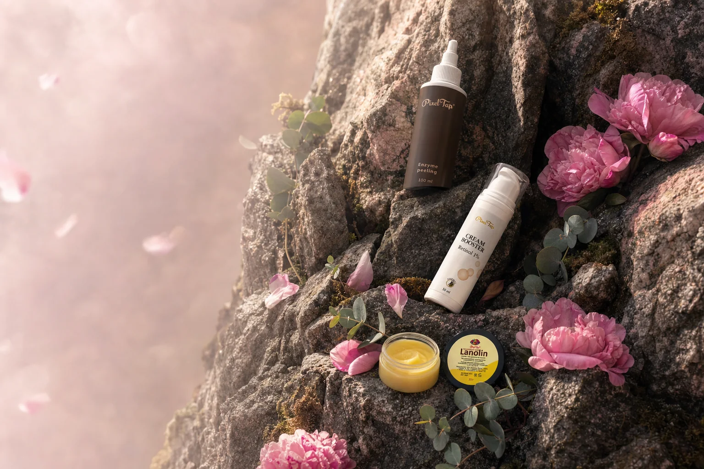
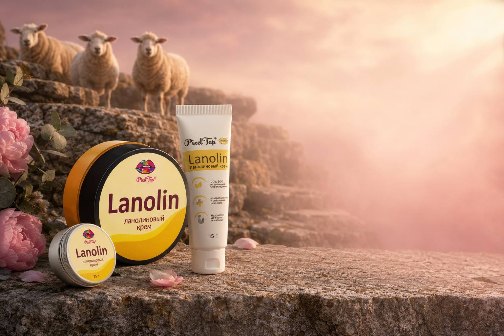

PixelTap одна марка на всю ванную
Лицо, тело, волосы, ногти, брови, малыши. 100+ средств — чтобы не собирать полку из десяти брендов.

Ингредиент
Самый недооценённый
О нём почти не пишут в рекламе — он не звучит модно. Ни пептидов, ни стволовых клеток. Просто воск из овечьей шерсти, которым лечат трещины у кормящих матерей и обветренные губы у альпинистов.
Овца смазывает им шерсть, чтобы не промокнуть в горах под дождём. По составу этот воск ближе к жирам нашей кожи, чем любое растительное масло. Мы просто вычесали его и очистили — овца при этом продолжает пастись.
- ≈15%
- воска в свежем руне
- 37 °C
- плавится от тепла ладони
- 1
- ингредиент, без отдушек
Каталог
PixelTap
Российская марка ухода за кожей. Мы продаём там, где вы уже покупаете: на Ozon и Wildberries. А этот сайт существует, чтобы показать то, что не помещается в карточку товара — порядок, в котором средства работают.
- Где купить
- Ozon и Wildberries, официальные кабинеты марки
- Правообладатель
- ИП Арасланова З. Г.
- ОГРНИП
- 321745600074072
- ИНН
- 744402248532